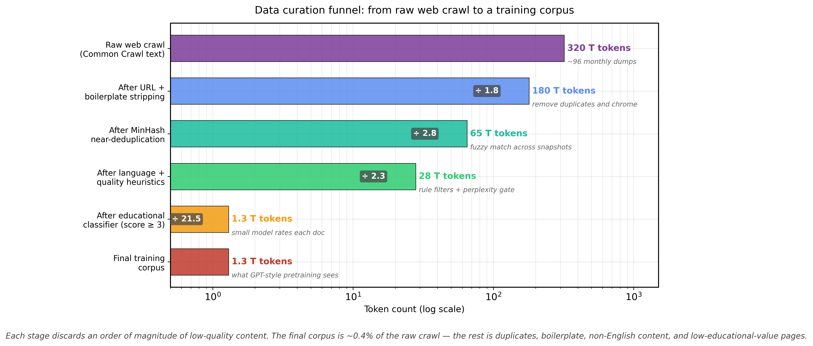

The internet is humanity's attic: priceless treasures buried under mountains of junk. Data curation is the art of sorting through it all without accidentally teaching your model to sell cryptocurrency.
Scale, Dumpster Diving AI Agent
Prerequisites
This section is largely self-contained. Familiarity with tokenization from Chapter 02 helps for understanding token counts. The discussion of perplexity-based filtering assumes basic language model concepts from Section 1.1.
Data is the foundation of every LLM. While architecture and scaling get the headlines, data quality is often the single largest determinant of model quality. A well-curated 1T token dataset will produce a better model than a poorly filtered 10T token dataset. This section covers the full data curation pipeline: where the data comes from, how duplicates are removed, how quality is assessed, how domain proportions are balanced, and how to handle toxic or private content at web scale. As the scaling laws in Section 7.3 showed, data volume and model size must grow together for optimal training.
6.4.1 Pre-training Data Sources
Modern LLMs are trained on a mixture of data drawn from several broad categories. The composition of this mixture profoundly influences the model's strengths and weaknesses.
| Source | Scale | Quality | Key Datasets |
|---|---|---|---|
| Web crawl | Trillions of tokens | Variable (noisy) | Common Crawl, FineWeb, DCLM |
| Books | Tens of billions | High | Books3, Project Gutenberg |
| Code | Hundreds of billions | Medium to high | The Stack, GitHub |
| Scientific papers | Tens of billions | High | Semantic Scholar, arXiv |
| Wikipedia | ~4B tokens (English) | Very high | Wikipedia dumps |
| Curated web | Hundreds of billions | High (filtered) | RedPajama, Dolma |
Common Crawl is by far the largest publicly available source, containing petabytes of raw HTML from billions of web pages collected since 2008. However, raw Common Crawl is overwhelmingly low quality: advertisements, boilerplate navigation text, spam, pornography, and machine-generated content dominate. Turning this raw crawl into useful training data requires a sophisticated curation pipeline.
Who: A pre-training team at an AI research lab preparing a 500B token dataset for a 3B parameter model.
Situation: The team assembled data from Common Crawl snapshots spanning 2019 to 2024, along with curated book and code corpora.
Problem: Early training runs showed the model memorizing specific passages verbatim. Evaluation revealed that certain popular web pages (Wikipedia mirrors, Stack Overflow answers, news articles syndicated across hundreds of sites) appeared dozens of times in the dataset.
Dilemma: Aggressive deduplication (exact match) would miss near-duplicates with minor formatting differences. MinHash-based fuzzy deduplication was more thorough but computationally expensive, requiring 2,000 CPU-hours for the full corpus.
Decision: They implemented a two-stage deduplication pipeline: exact URL deduplication first (cheap, removed 18% of documents), followed by MinHash near-deduplication with a Jaccard threshold of 0.8 (removed an additional 22%).
How: They used a distributed MinHash implementation with 128 hash functions across a 64-node Spark cluster, processing the entire corpus in under 8 hours.
Result: The deduplicated dataset was 40% smaller but produced a model with 6% lower perplexity and dramatically reduced memorization (extractable memorized sequences dropped by 73%). Training was also faster due to the smaller dataset.
Lesson: Deduplication is not just a data hygiene step; it directly improves model quality by preventing overfitting to repeated content and encouraging the model to learn generalizable patterns instead.
6.4.2 The Data Curation Pipeline
The Common Crawl dataset contains over 250 billion web pages, which after deduplication, quality filtering, and toxicity removal, typically shrinks to about 1 to 5% of its original size. Training data curation is less "finding a needle in a haystack" and more "the haystack is 95% needles you do not want."
6.4.3 Text Extraction

Raw HTML must be converted to clean text before any further processing (similar extraction challenges arise when building retrieval pipelines, as discussed in Section 23.2). This is harder than it sounds. Web pages contain navigation menus, sidebars, advertisements, cookie banners, JavaScript artifacts, and boilerplate footers that vastly outnumber the actual content. Tools like trafilatura and resiliparse use structural heuristics to identify the main content block and strip everything else. The FineWeb project demonstrated that switching from the simple jusText extractor to trafilatura produced measurably better downstream performance.
6.4.4 Deduplication
Web crawl data is extraordinarily redundant. The same news article, boilerplate legal text, or copied content may appear thousands of times. Duplicate data wastes training compute, biases the model toward overrepresented content, and increases memorization risk. Deduplication operates at three levels of granularity.
Exact Deduplication
The simplest approach: compute a hash (MD5, SHA-256) of each document and discard exact duplicates. This is fast but misses near-duplicates that differ by a few characters (timestamps, bylines, formatting).
Near-Duplicate Detection with MinHash
MinHash with Locality-Sensitive Hashing (LSH) is the standard technique for finding near-duplicate documents at scale. The core idea: represent each document as a set of n-grams, compute a compact signature (MinHash), and use LSH to efficiently find documents with high Jaccard similarity. Two documents are considered near-duplicates if their Jaccard similarity exceeds a threshold (typically 0.8):
where $A$ and $B$ are the n-gram sets of two documents. The MinHash technique approximates this similarity in O(k) time using $k$ hash functions, rather than computing the exact set intersection.
# MinHash + LSH deduplication: hash character n-grams into signatures,
# bucket similar documents together, and flag near-duplicate pairs.
import hashlib
from collections import defaultdict
def get_ngrams(text, n=5):
"""Extract character n-grams from text."""
words = text.lower().split()
return set(
" ".join(words[i:i+n])
for i in range(len(words) - n + 1)
)
def minhash_signature(ngrams, num_hashes=128):
"""Compute MinHash signature for a set of n-grams."""
signature = []
for i in range(num_hashes):
min_hash = float('inf')
for ngram in ngrams:
# Hash with a different seed for each hash function
h = int(hashlib.sha256(
f"{i}:{ngram}".encode()
).hexdigest(), 16)
min_hash = min(min_hash, h)
signature.append(min_hash)
return signature
def lsh_buckets(signature, bands=16):
"""Split signature into bands for LSH bucketing."""
rows_per_band = len(signature) // bands
buckets = []
for b in range(bands):
start = b * rows_per_band
band_hash = hash(tuple(signature[start:start + rows_per_band]))
buckets.append((b, band_hash))
return buckets
# Example: find near-duplicates
docs = [
"The quick brown fox jumps over the lazy dog in the park",
"The quick brown fox jumps over a lazy dog in the park", # near-dup
"Machine learning models require large amounts of data",
]
bucket_index = defaultdict(list)
for doc_id, doc in enumerate(docs):
ngrams = get_ngrams(doc, n=3)
sig = minhash_signature(ngrams, num_hashes=64)
for bucket in lsh_buckets(sig, bands=8):
bucket_index[bucket].append(doc_id)
# Find candidate pairs that share a bucket
candidates = set()
for docs_in_bucket in bucket_index.values():
if len(docs_in_bucket) > 1:
for i in range(len(docs_in_bucket)):
for j in range(i+1, len(docs_in_bucket)):
candidates.add((docs_in_bucket[i], docs_in_bucket[j]))
print(f"Near-duplicate candidates: {candidates}")Substring-Level Deduplication
Document-level deduplication misses repeated paragraphs that appear across otherwise unique documents (e.g., license headers, terms of service). Substring deduplication uses suffix arrays to find repeated sequences of n or more tokens that appear in multiple documents, then removes all but one occurrence. The RefinedWeb and DCLM datasets demonstrated that substring deduplication consistently improves model quality.
6.4.5 Quality Filtering
97% of the internet is not worth training on, and quality filtering is the highest-leverage intervention. A typical web crawl starts at 100+ TB of raw HTML. After deduplication, quality filtering, and domain mixing, the final training dataset is often 3 TB or less. The FineWeb project showed that aggressive quality filtering on Common Crawl can match the performance of curated datasets like C4 and The Pile, despite starting from much noisier raw material. DCLM demonstrated that a well-trained quality classifier can improve benchmark performance by several percentage points over heuristic filtering alone.
After deduplication, the remaining text still varies enormously in quality. Quality filtering separates informative, well-written content from spam, gibberish, and low-effort text. Three complementary strategies are commonly used together.
Heuristic Filters
Rule-based filters are fast and interpretable. Common heuristics include removing documents that are too short (under 100 words), have excessive punctuation or capitalization ratios, contain too many URLs or special characters, have an abnormally low alphabetic character ratio, or have too many repeated lines or paragraphs.
Perplexity-Based Filtering
A small language model (often a KenLM n-gram model trained on Wikipedia) is used to score each document's perplexity. Documents with very high perplexity (incoherent text) or very low perplexity (repetitive boilerplate) are discarded. The CCNet pipeline introduced this approach and demonstrated significant quality improvements.
Classifier-Based Filtering
A binary classifier is trained to distinguish "high-quality" text (e.g., Wikipedia, books) from "low-quality" text (random web samples). The FineWeb-Edu dataset used a quality classifier trained on educational content annotations to produce a subset of FineWeb specifically optimized for knowledge-intensive tasks. Chapter 15 explores how synthetic data generation can complement these curation pipelines when natural data is scarce. DCLM used a fastText classifier trained on references from Wikipedia and OpenWebText to score documents on a quality scale.
# Minimal quality filtering pipeline
import re
from collections import Counter
def heuristic_quality_filter(doc: str) -> dict:
"""Apply heuristic quality filters to a document."""
words = doc.split()
lines = doc.strip().split("\n")
chars = len(doc)
word_count = len(words)
# Length check
if word_count < 50:
return {"pass": False, "reason": "too_short"}
# Alphabetic character ratio
alpha_ratio = sum(c.isalpha() for c in doc) / max(chars, 1)
if alpha_ratio < 0.6:
return {"pass": False, "reason": "low_alpha"}
# Repeated line ratio (boilerplate detection)
line_counts = Counter(lines)
repeated = sum(c - 1 for c in line_counts.values() if c > 1)
if repeated / max(len(lines), 1) > 0.3:
return {"pass": False, "reason": "repetitive"}
# URL density (spam detection)
url_count = len(re.findall(r"https?://", doc))
if url_count / max(word_count, 1) > 0.1:
return {"pass": False, "reason": "url_heavy"}
return {"pass": True, "words": word_count, "alpha": round(alpha_ratio, 3)}
# Test on sample documents
samples = [
("Good article", "The transformer architecture has revolutionized NLP by enabling parallel attention. " * 8),
("Too short", "Click here now"),
("Spam", "Visit https://a.com and https://b.com and https://c.com now " * 5),
("Repetitive", ("Buy now!\n" * 20) + "Some padding text to reach minimum length for a valid document check."),
]
for label, doc in samples:
result = heuristic_quality_filter(doc)
print(f"{label:>15}: {result}")The FineWeb dataset from Hugging Face represents the state of the art in open data curation. Starting from 96 Common Crawl snapshots (over 100 TB of raw HTML), the team applied URL filtering, language identification, MinHash deduplication, and quality scoring to produce a 15 trillion token English corpus. Its educational subset, FineWeb-Edu, further classifies documents by educational value using a classifier trained on LLM annotations. Models trained on FineWeb-Edu outperform those trained on full FineWeb by 2 to 4 points on knowledge benchmarks.
datasets for Pre-training DataThe HuggingFace datasets library (pip install datasets) provides streaming access to terabyte-scale pre-training corpora without downloading everything to disk. This is essential when working with datasets like FineWeb that exceed local storage capacity.
# pip install datasets
from datasets import load_dataset
# Stream FineWeb-Edu (15T tokens) without downloading the full dataset
ds = load_dataset(
"HuggingFaceFW/fineweb-edu",
name="sample-10BT", # 10B-token sample for experimentation
split="train",
streaming=True, # essential for large corpora
)
# Inspect a few documents and their quality scores
for i, example in enumerate(ds):
print(f"Score: {example['score']:.1f} | "
f"Length: {len(example['text']):,} chars | "
f"URL: {example['url'][:60]}")
if i >= 4:
break
# Filter for high-quality educational content on the fly
high_quality = ds.filter(lambda x: x["score"] >= 4.0)6.4.6 Data Mixing and Domain Proportions
The final training corpus is typically a weighted mixture of data from different domains. The proportions of this mixture significantly affect the model's capabilities. For instance, increasing the fraction of code data improves reasoning and structured output abilities. Increasing the fraction of scientific text improves factual knowledge.
The optimal mixing proportions are typically found through ablation experiments on smaller models. DoReMi (Xie et al., 2023) proposed an automated approach: train a small proxy model with uniform mixing, then use the distribution of training loss across domains to reweight the mixture, upsampling domains where the model struggles and downsampling domains that are already well-learned.
# Simplified domain mixing with weighted sampling
import numpy as np
# Domain proportions (must sum to 1.0)
domain_weights = {
"web": 0.55,
"code": 0.15,
"books": 0.10,
"wikipedia": 0.05,
"scientific": 0.08,
"math": 0.04,
"conversation": 0.03,
}
def sample_batch(domain_weights, batch_size=1024):
"""Sample a training batch according to domain proportions."""
domains = list(domain_weights.keys())
probs = list(domain_weights.values())
# Each sample in the batch comes from a domain
batch_domains = np.random.choice(domains, size=batch_size, p=probs)
counts = {d: int((batch_domains == d).sum()) for d in domains}
return counts
batch = sample_batch(domain_weights)
for domain, count in sorted(batch.items(), key=lambda x: -x[1]):
bar = "#" * (count // 10)
print(f" {domain:<15} {count:4d} samples {bar}")6.4.7 Toxicity and PII Removal
Pre-training data must be filtered for toxic content (hate speech, explicit material, harassment) and personally identifiable information (PII) such as phone numbers, email addresses, and social security numbers. The broader ethical considerations of data sourcing and model safety are covered in Chapter 25. Toxicity classifiers like the Jigsaw Perspective API or custom fastText models flag documents above a toxicity threshold. PII removal typically uses regex patterns for structured identifiers combined with named entity recognition for names and addresses.
Overly aggressive toxicity filtering can remove legitimate content about sensitive topics (medical discussions, legal cases, historical events) and hurt the model's ability to understand and reason about these subjects. Most pipelines use a threshold rather than a binary filter, removing only the most toxic content while preserving borderline cases.
6.4.8 Data Pruning and Influence Functions
Beyond filtering for quality, recent research explores selecting the most informative training examples. Data pruning removes redundant or uninformative samples to train on a smaller, higher-quality subset without sacrificing performance.
Influence functions provide a principled approach: they estimate how much each training example contributes to the model's performance on a validation set. Formally, the influence of training example $z_{i}$ on the loss at validation point $z_{test}$ is:
where $H_{ \theta }$ is the Hessian of the training loss. Computing exact influence functions is prohibitively expensive for large models (the Hessian has $N^{2}$ entries), so practical approaches use approximations such as LiSSA (Linear time Stochastic Second-Order Algorithm) or track gradient statistics during training as proxies for influence.
Data Quality Over Quantity: The "Textbooks Are All You Need" Paradigm
The scaling laws from Kaplan et al. and Chinchilla established that more data generally leads to better models. But a parallel line of research has demonstrated that data quality can partially substitute for data quantity, producing surprisingly capable models at a fraction of the expected parameter count. The most striking evidence comes from Microsoft's Phi model family.
The original Phi-1 (Gunasekar et al., 2023) was a 1.3B parameter model trained on only 7B tokens of carefully curated "textbook quality" code data, plus 1B tokens of synthetically generated exercises. Despite its tiny scale, Phi-1 achieved 50.6% on HumanEval (a code generation benchmark), matching or exceeding models 10x its size that were trained on orders of magnitude more data. The key insight, articulated in the paper's title "Textbooks Are All You Need," was that a small amount of high-quality, pedagogically structured data could teach reasoning patterns more efficiently than massive volumes of noisy web scrapes.
Phi-1.5 extended the approach to general natural language, using a combination of curated web data and synthetic "textbook" content generated by GPT-3.5. The synthetic data was specifically designed to include step-by-step explanations, worked examples, and structured reasoning, the kind of content found in good textbooks rather than typical web pages. Phi-1.5 (1.3B parameters) achieved performance comparable to models 5 to 10 times its size on reasoning benchmarks.
The later Phi-3 (3.8B parameters) and Phi-4 (14B parameters) continued the philosophy at larger scales, combining heavily curated web data with synthetic data generated through increasingly sophisticated pipelines. Phi-3 Mini, at just 3.8B parameters, matched Mixtral 8x7B (46.7B total parameters) on several reasoning benchmarks. Phi-4 introduced "pivotal token search," a technique that identifies tokens where the model's prediction is most uncertain and uses those to generate targeted training examples that address specific knowledge gaps.
The Phi results have influenced how the broader community thinks about pre-training data. The FineWeb-Edu dataset from Hugging Face applies a similar philosophy at larger scale: it uses a classifier trained on educational content to score web pages, retaining only the most informative subset. Models trained on FineWeb-Edu consistently outperform those trained on the same volume of unfiltered data. The practical takeaway is that investing in data quality (through curation, filtering, or synthetic generation) often yields better returns than simply scaling data volume. This is especially relevant as the supply of high-quality natural text approaches its limits.
6.4.9 Synthetic Data for Pre-training
As high-quality natural text becomes scarce, synthetic data generated by LLMs themselves has become an increasingly important part of the pre-training pipeline. The key insight is that a capable model can generate high-quality training data for a less capable model (or even for future training stages of itself).
Microsoft's Phi-3 and Phi-4 models demonstrated this powerfully: they were trained substantially on synthetic "textbook-quality" data generated by larger models. Despite being small (3.8B parameters), Phi-3 rivaled models many times its size on reasoning benchmarks, largely because its training data was exceptionally high quality. The key was generating structured, educational content (explanations, worked examples, reasoning chains) rather than simply paraphrasing web text.
Quality control for synthetic data is critical. Without careful filtering, model-generated text can amplify biases, introduce subtle errors, or create distribution collapse (where the synthetic data converges to a narrow mode of the generating model). Effective strategies include:
- Verification: Use a separate model or tool to check factual claims in generated text
- Diversity enforcement: Vary prompts, topics, and generation parameters to prevent mode collapse
- Human curation: Use human reviewers to audit a sample of synthetic data for quality
- Mixing: Blend synthetic data with natural data rather than using it exclusively
Exercises
The C4 corpus contains an estimated 3-7% near-duplicate documents after URL-level deduplication. (a) Why does training on duplicated data hurt loss-per-token rather than just being neutral? (b) What is the difference between exact and near-duplicate detection, and which one matters more for LLM pretraining? (c) Why is MinHash with locality-sensitive hashing the canonical pretraining-scale dedup tool rather than a vector embedding approach?
Answer Sketch
(a) Duplicates inflate the empirical probability of repeated strings, biasing the model toward verbatim memorization and away from generalization; they also waste compute by re-training the model on already-learned spans. (b) Exact dedup catches identical documents but misses formatting variants (whitespace, headers); near-dedup catches templated boilerplate and quoted news, which is where most real duplication lives. (c) MinHash+LSH runs in linear time on tens of trillions of tokens with bounded memory and gives a tunable Jaccard threshold; vector embeddings would require encoding every document with a model (much higher per-doc cost) and ANN indexing at this scale is harder to operate than hash-based bucketing.
You have 10 trillion raw web tokens. You apply a Wikipedia-similarity classifier and keep only the top quartile (2.5T tokens). Your loss curve improves substantially. What happens to the loss curve if you instead keep the top 1% (100B tokens) of the same corpus? Predict whether quality improves further, plateaus, or degrades, and why.
Answer Sketch
Loss-per-token typically improves slightly, but total achievable loss worsens because you no longer have enough data to feed a Chinchilla-optimal training run for any reasonably sized model. Aggressive filtering also narrows the data distribution: the resulting model becomes excellent at Wikipedia-style prose and worse at colloquial text, code, and the long tail of domains. Empirically the sweet spot is the top 20-40% of a quality classifier, not the top 1-5%. This is the classic data-quantity vs data-quality tradeoff that motivated the "Phi" recipe of small high-quality data and its limits.
Sketch a 10-line Python loop that runs a domain-weight sweep for pretraining. The script should: (1) define a list of domains [web, code, books, academic], (2) propose 4 candidate weight vectors, (3) sample a 1B-token training mix from each weighting, (4) record the resulting validation loss on a multi-domain eval, (5) recommend the weighting with the best loss. What pitfall would you watch for in the output?
Answer Sketch
Pseudocode: for w in weight_candidates: mix = sample_from_domains(w, 1B); model = train(mix); loss = eval(model, multi_domain_eval); record(w, loss); print(min(record, key=loss)). The pitfall is that one weighting may dominate average loss simply by skewing the eval mix toward its favored domain (web-heavy training looks great on web evals). Mitigations: report per-domain loss separately, weight the eval mix uniformly across domains, and sanity-check downstream task scores (HumanEval for code, MMLU for academics) rather than only LM loss. The DoReMi algorithm formalizes this with min-max optimization over domains.
Your data team strips all 9-digit number sequences (a regex for SSN-like patterns) from the pretraining corpus to reduce PII risk. What three failure modes does this introduce, and what is one better approach?
Answer Sketch
Failures: (1) phone numbers, ZIP codes, postal IDs, and tracking numbers all match; the model gets confused about how digit sequences appear in normal text. (2) The redaction itself becomes a learnable pattern: the model sees lots of [REDACTED] and may output that token in normal generation. (3) Real PII often appears in non-numeric form (names + addresses, free-text emails) and the regex misses all of it, producing false security. Better: use a small NER classifier to detect candidate spans, sample-and-audit a small fraction with humans, and run a memorization probe (extraction attacks) on the trained checkpoint as the actual safety check. This is now the standard pretraining-data PII recipe at frontier labs.
Epoch AI projects that high-quality text data available on the public internet will be effectively exhausted by 2026 to 2028. Current large models already train on significant fractions of all available web text. This "data wall" is driving three parallel responses: (1) synthetic data generation at scale, (2) multimodal training that incorporates images, video, and audio alongside text, and (3) improved data efficiency through better curation and deduplication. Legal challenges around copyrighted training data add further pressure. How the field navigates this constraint will shape the next generation of LLMs.
Data curation is often treated as an engineering task, but it is actually a form of implicit inductive bias no less important than architectural choices. When you filter out low-quality web pages using a Wikipedia-trained classifier, you are encoding a prior about what "good text" looks like. When you set domain mixing ratios (60% web, 20% code, 10% academic, 10% books), you are defining the model's prior distribution over knowledge types. The Phi series demonstrated that aggressive curation bias toward high-quality educational text can substitute for an order of magnitude in model parameters. This connects to a fundamental result in learning theory: the no-free-lunch theorem guarantees that no learning algorithm outperforms all others across all possible distributions. Every model must make assumptions, and data curation is how those assumptions are encoded at the data level rather than the architecture level. The debate between "more data" and "better data" is ultimately a debate about where to invest in inductive bias.
6.4.10 Major Open Datasets
| Dataset | Size | Key Feature |
|---|---|---|
| The Pile | 825 GB | 22 diverse subsets, academic focus |
| RedPajama v2 | 30T tokens (raw) | Open reproduction of Llama data |
| FineWeb | 15T tokens | Best open Common Crawl processing |
| FineWeb-Edu | 1.3T tokens | Educational quality subset |
| DCLM | 4T tokens | Classifier-curated, strong baselines |
| Dolma | 3T tokens | Open, for OLMo model family |
| The Stack v2 | 67.5TB code | Permissively licensed source code |
Show Answer
Show Answer
Show Answer
Show Answer
Key Takeaways
- Data quality dominates data quantity. Aggressive curation of a smaller dataset often outperforms naive scaling of a larger one.
- Deduplication at document and substring levels is essential. MinHash with LSH is the standard for finding near-duplicates at scale.
- Quality filtering combines heuristic rules, perplexity scoring, and trained classifiers. Classifier-based filtering (FineWeb-Edu, DCLM) provides the largest quality improvements.
- Domain mixing proportions directly shape model capabilities. Increasing code and math data improves reasoning; over-representing web text dilutes specialized knowledge.
- Toxicity and PII removal require careful calibration to avoid removing legitimate content about sensitive topics.
- Data pruning and influence functions represent the frontier of data curation, selecting the most informative examples for training.
Model-guided data selection. Traditional data curation relies on heuristic filters and human-crafted rules. The frontier is moving toward model-based curation, where a trained model scores and selects its own training data. DCLM (DataComp for Language Models, 2024) showed that training a simple classifier on quality examples can filter web data more effectively than any heuristic pipeline. Influence functions and data attribution methods (TRAK, Datamodels) take this further by identifying which training examples most affect specific model behaviors, enabling targeted data curation for capability development. Synthetic data generation (Section 17.1) is also emerging as a complement to web-scraped data, particularly for reasoning and instruction-following capabilities.
What's Next?
In the next section, Section 7.5: Optimizers and Training Dynamics, we examine the optimizers and training dynamics that make stable large-scale training possible.
Bibliography and Further Reading
Documents Hugging Face's FineWeb pipeline for extracting high-quality text from Common Crawl. Provides detailed ablations of filtering steps (language ID, quality scoring, deduplication) and their impact on downstream model performance.
Introduces the Dolma corpus with fully documented provenance, filtering decisions, and mixing ratios. A reference implementation for transparent, reproducible data curation at trillion-token scale.
Lee, K. et al. (2022). "Deduplicating Training Data Makes Language Models Better." ACL 2022.
Demonstrates that exact and near-duplicate removal from training data reduces memorization, lowers perplexity, and improves generation quality. Introduces scalable MinHash-based deduplication applicable to web-scale corpora.
Carlini, N. et al. (2023). "Quantifying Memorization Across Neural Language Models." ICLR 2023.
Measures how much training data language models memorize verbatim, finding that memorization scales with model size and data duplication. Essential reading for understanding privacy risks and the importance of deduplication.
Longpre, S. et al. (2024). "A Pretrainer's Guide to Training Data." arXiv preprint arXiv:2305.13169.
A comprehensive survey of data curation decisions including source selection, filtering, deduplication, and mixing. Provides practical guidance for practitioners building pre-training pipelines from scratch.
Uses a small proxy model to learn optimal domain mixing weights that minimize worst-case loss across domains. Shows that learned data mixtures can match the performance of hand-tuned ratios while being more principled and reproducible.